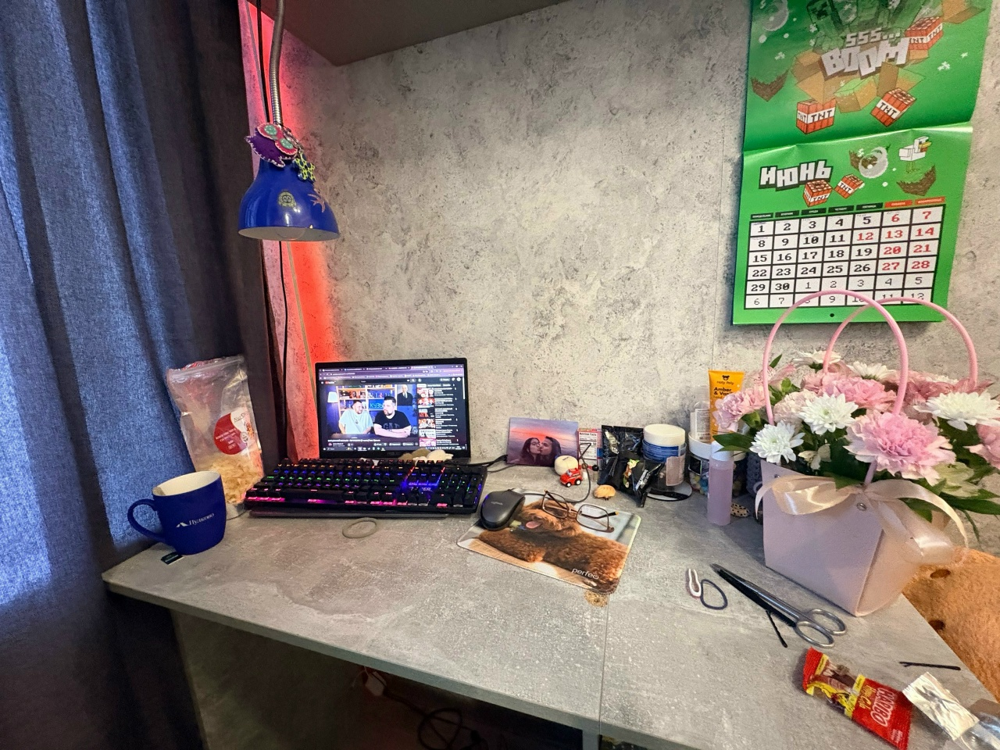

✨ Шаблон отчёта
Аудит рабочего пространства и проект улучшения
Заполните поля ниже, перенесите результаты из чек-листа и оформите собственную итоговую страницу.
📌 1. Общая информация
👤 ФИО / автор
🏢 Объект анализа
🎯 Назначение рабочего пространства
📊 2. Итоги чек-листа
Набрано баллов
72
Максимум
92
Процент
78%
Результат
👍 Хорошая организация, есть точки для улучшения
🔍 3. Ключевые наблюдения
✅ Сильные стороны
⚠️ Проблемные зоны
🚀 Три улучшения с наибольшим эффектом
🛠 4. Проект улучшения
✨ Что можно улучшить без существенных затрат
💰 Что потребует бюджета, но даст заметный эффект
📝 Обоснование проекта
🖼 5. Визуальные материалы
Фотографии текущего состояния рабочего места.

📸 Общий вид рабочего места
Текущая организация пространства
⚠️ Проблемная зона (кабели и пространство)
Недостаток места и беспорядок в кабелях💡 Примечание: для корректного отображения фотографий поместите файлы настя.jpg и настя 2.jpg в ту же папку, что и HTML-файл.
📝 6. Итоговый вывод
💡 Совет: хороший вывод должен соединять наблюдения, баллы, смысловые выводы и реальные предложения по улучшению.
🌍 7. Публикация итоговой работы
После заполнения отчёта его можно не только сохранить локально, но и опубликовать как собственный мини-сайт.
✨ Идея: если вы опубликуете HTML-страницу через GitHub Pages, у вас появится публичная ссылка, которой удобно делиться с преподавателем и использовать в портфолио.